📑 Dans cette page (9 sections)
🗂️ Fichiers
%%{init: {"theme":"base","themeVariables":{"primaryColor":"#0f2130","primaryTextColor":"#e6eef5","primaryBorderColor":"#5fd0ff","lineColor":"#3d89ab","secondaryColor":"#1a0d14","tertiaryColor":"#0b1824","edgeLabelBackground":"#0f2130","fontFamily":"ui-monospace, Menlo, Consolas, monospace","noteBkgColor":"#1a0d14","noteTextColor":"#ffb4bb","actorBkg":"#0f2130","actorBorder":"#5fd0ff","actorTextColor":"#e6eef5","signalColor":"#3d89ab","signalTextColor":"#3d89ab","labelBoxBkgColor":"#0f2130","labelTextColor":"#e6eef5","loopTextColor":"#3d89ab"}}}%%
flowchart TB
subgraph FRONT["🎭 Navigateur"]
T["Templates Jinja + CSS"]
J["main.js et editor.js"]
end
subgraph BACK["🐍 Flask : app.py"]
RT["Routes publiques"]
AD["Routes admin"]
AU["Auth Discord"]
CT["content.py<br/>rendu sécurisé"]
end
subgraph DATA["💾 Données"]
DB[("PostgreSQL ou SQLite")]
ST[["Stockage des médias"]]
end
T --> RT
J --> AD
RT --> CT
AD --> CT
RT --> DB
AD --> DB
AD --> ST
AU --> AD
class DB,ST ok
classDef cloud fill:#0f2130,stroke:#5fd0ff,color:#e6eef5
classDef ok fill:#0c241b,stroke:#5dffb0,color:#e6eef5
classDef bad fill:#241219,stroke:#ff4d5e,color:#ffb4bb
scp_public/
├─ app.py Flask : configuration, base, stockage, auth Discord, routes, erreurs
├─ content.py Markdown + shortcodes médias → HTML assaini ; slug ; tags ; résumé
├─ requirements.txt Dépendances Python
├─ render.yaml Déploiement Render (variante gratuite)
├─ .env.example Modèle de configuration
├─ templates/ base, home, archives, article, admin, editor, login, forbidden, error, _macros
├─ static/css/ style.css (thème, animations, éditeur)
├─ static/js/ main.js (animations, lecteur), editor.js (éditeur de médias)
├─ uploads/ médias en mode disque local
└─ docs/ wiki
🧱 Technologies
Flask 3 · SQLAlchemy 2 (Core) · psycopg 3 / SQLite · Flask-Limiter · Markdown + bleach · requests (Discord) · Gunicorn (production) · boto3 (optionnel, S3/R2).
🛣️ Routes publiques
| Route | Rôle |
|---|---|
/ |
Accueil (article épinglé/récent, départements, compteurs) |
/archives?q=§ion=&page= |
Archives paginées, recherche, filtre |
/section/<slug> |
Un département |
/tag/<tag> |
Un tag |
/a/<slug> |
Un article (brouillons visibles des éditeurs) |
/feed.xml, /sitemap.xml, /robots.txt |
RSS, plan du site, robots |
/healthz |
Contrôle de santé (ok) |
/media/<fichier> |
Médias en mode disque local (cache long, requêtes partielles) |
/login, /auth/callback, /logout |
Connexion Discord |
🛣️ Routes d'administration (éditeurs)
| Route | Méthode | Rôle |
|---|---|---|
/admin |
GET | Tableau de bord |
/admin/new, /admin/edit/<id> |
GET, POST | Éditeur |
/admin/toggle/<id> |
POST | Publier / dépublier |
/admin/delete/<id> |
POST | Supprimer un document |
/admin/preview |
POST (JSON) | Aperçu Markdown |
/admin/media |
GET (JSON) | Liste des médias |
/admin/upload |
POST | Envoi de médias |
/admin/media/<id>/delete |
POST | Supprimer un média |
⚙️ Pipeline de rendu d'un article
- Les lignes
[[media|gallery|youtube: …]]sont extraites et remplacées par des jetons ; chaque shortcode est converti en HTML construit par le serveur (adresses validées et échappées). ||texte||devient un<span class="redacted">.- Markdown → HTML ; bleach supprime tout ce qui n'est pas autorisé.
- Les jetons sont remplacés par le HTML des médias.
🔐 Connexion
/login?go=1 → Discord /oauth2/authorize (state) → /auth/callback
→ POST /oauth2/token → GET /users/@me → ID ∈ ADMIN_DISCORD_IDS ? session : 403
📦 Stockage
Interface unique save / delete avec deux implémentations : LocalStorage (fichiers dans DATA_DIR/uploads) et S3Storage (R2/S3). Le choix dépend de S3_BUCKET.
🍪 Base de données
Tables posts et media créées au démarrage (meta.create_all). Aucun outil de migration : voir Maintenance pour faire évoluer le schéma.
🎭 Front-end
style.css: variables de thème (:root), animations (grain, balayage, glitch, ticker…), mise en page des médias (flottants), éditeur, responsive,prefers-reduced-motion.main.js: menu, apparition au scroll, halo de souris, inclinaison des cartes, compteurs, séquence de démarrage, neige TV, horloge, barre de lecture, sommaire, zoom d'image, copie de lien.editor.js: barre d'outils, bibliothèque de médias, envoi (glisser-déposer, collage), aperçu, brouillon local.


◀ 🛡️ Sécurité · 🎨 Personnalisation ▶

⛨ SCP Foundation — projet de fan non officiel · contenus SCP sous licence CC BY-SA 3.0 lorsque applicable · ⬆ retour en haut